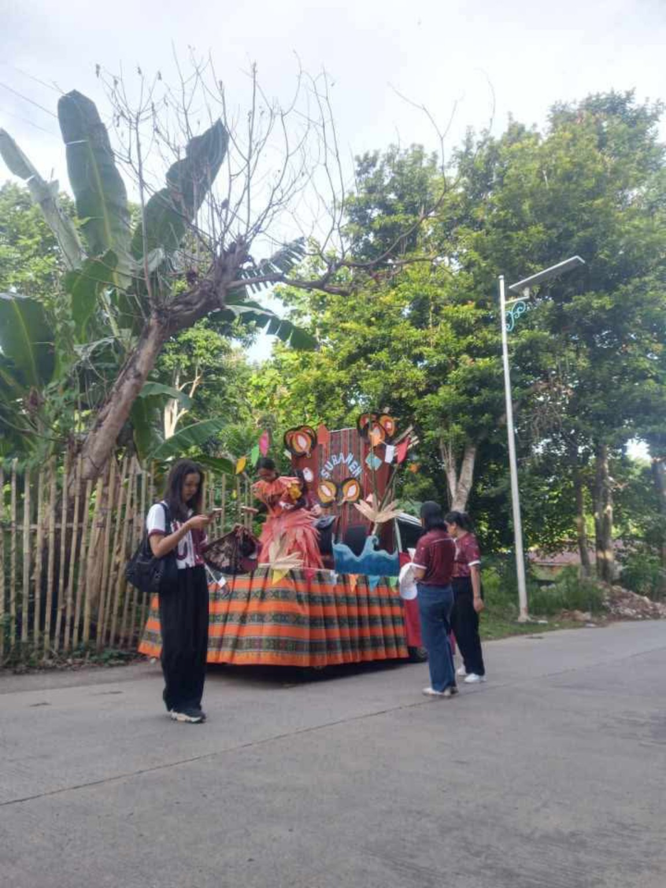
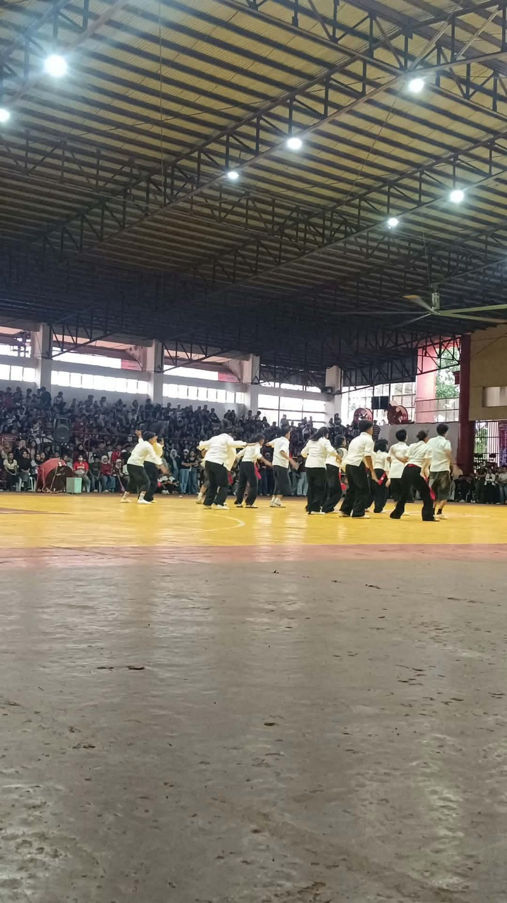
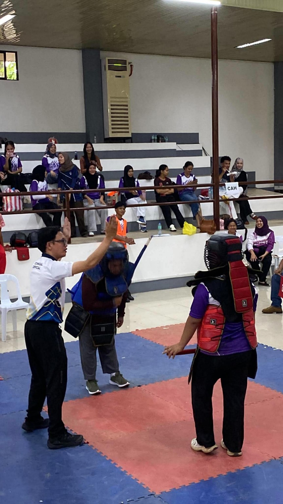

01
Celebrate Culture
Honor cultural identity through the opening parade, Indigenous Tribe Floats, mascots, and field demonstrations.
Preparing the celebration...
Culture. Talent. Unity. Excellence.
A campus-wide celebration of heritage, student talent, sportsmanship, and community spirit at Basilan State College.
Parageyan brings the BASC community together through cultural expression, friendly competition, creativity, and shared campus pride.
Honor cultural identity through the opening parade, Indigenous Tribe Floats, mascots, and field demonstrations.
Strengthen camaraderie among students, colleges, faculty, and the wider BASC community.
Celebrate athletic ability, artistic expression, teamwork, creativity, and sportsmanship.
From the opening parade to the final awarding ceremony, Parageyan 2026 features cultural presentations, sports, arts, and community activities.
Colleges present their Indigenous Tribe Floats and mascots, followed by live authentic instruments from Maluso Drum Beaters and a field demonstration by PathFit 3 students.
See October 3 schedule →Sports competitions take place throughout the celebration, with championships scheduled for October 6.
View schedule →Enjoy dance art, dance sport, live band, musical, and theatre competitions.
View schedule →Students put their knowledge and creativity to the test through quiz bowl, literary arts, and visual arts activities.
View schedule →Explore the Trade Fair, join traditional Filipino games, and take part in the Movie Marathon.
Explore activities →The celebration concludes with cheerdance, final booth judging, the awarding ceremony, and a mini concert on October 7.
View October 7 →Key activities based on the Parageyan 2026 calendar released by Basilan State College.
Kick-off parade with Indigenous Tribe Floats and mascots (6:30–9:00 AM); opening program (9:00 AM–12:00 NN); bench yell (1:00–4:00 PM); mascot competition (4:00–5:00 PM).
BaSC Main Campus / GymnasiumSports competitions, literary arts, quiz bowl, visual arts, and live band competition.
Various event venuesSports competitions continue alongside dance art and dance sport competitions.
Various event venuesSports championship, musical competition, theatre competition, and Color Fun Run.
Various event venuesCheerdance competition, final booth judging, awarding ceremony, and mini concert.
BaSC event venuesOther listed activities include the Trade Fair, Movie Marathon, and Larong Pinoy. Check official BASC announcements for updates to times or venues.
Celebrate the spirit of
Highlights of cultural pride, student performance, and sportsmanship during Parageyan 2026.



Follow official Basilan State College announcements for confirmed schedules, mechanics, venues, and participation guidelines.